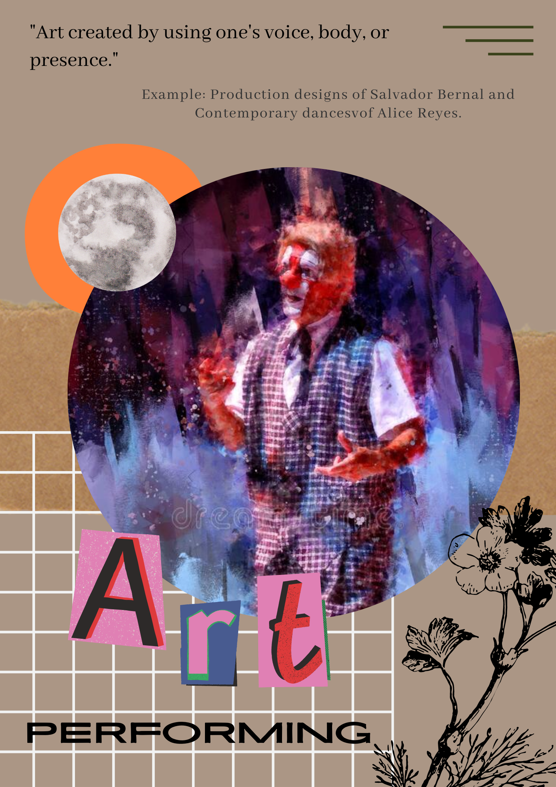
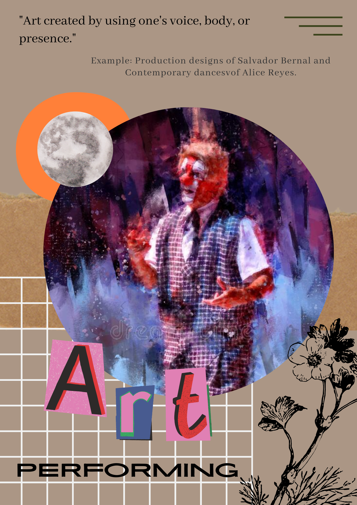

About Philippine Art Forms
|
Each country has unique characteristics that distinguish it from others.
These characteristics range from lifestyle to notable buildings. America, for example, was known as the "Land of the Free."
In contrast, England is known for its Big Ben and Windsor Castle. As for the Philippines, it is known as "the call center of the world." We are also characterized as hospitable to our guests by foreigners. While these are some things that we are known for, we must remember the amazing things that our predecessors imparted to us. One of which is our art forms. In line with this, our organization aims to encourage the younger generation to partake in the performance of Philippine art because our country's art is the manifestation of our culture that has guided us for countless generations. As a background check of some sorts, here are 4 educational posters that portrays Filipino art through its 4 different forms. |
 
